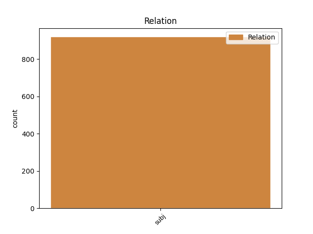
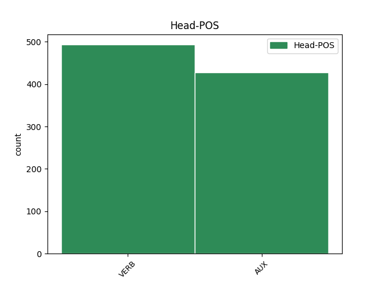
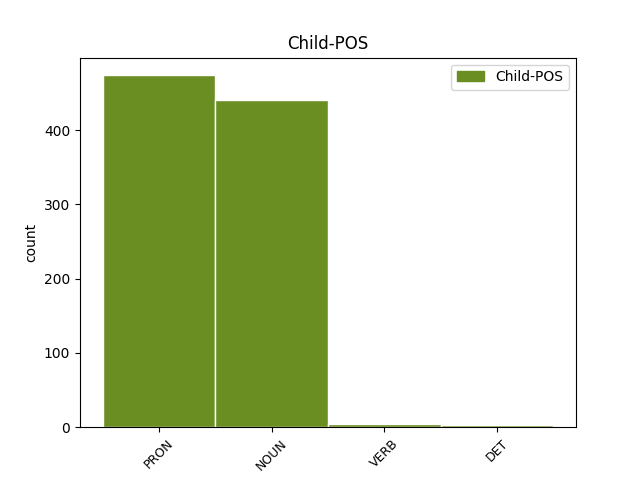

Distribution of features within this leaf



Agreement Rules sorted by frequency.
- When the dependent token is the subject(subj) of the head token, and the head token is VERB and the dependent token is PRON.
1 Et _ _ _ _ 0 _ _ _
2 je _ _ _ _ 0 _ _ _
3 me _ _ _ _ 0 _ _ _
4 souviens _ _ _ _ 0 _ _ _
5 que _ _ _ _ 0 _ _ _
6 j' _ _ _ _ 0 _ _ _
7 étais _ _ _ _ 0 _ _ _
8 assis _ _ _ _ 0 _ _ _
9 à _ _ _ _ 0 _ _ _
10 mon _ _ _ _ 0 _ _ _
11 bureau _ _ _ _ 0 _ _ _
12 et _ _ _ _ 0 _ _ _
13 je _ _ _ _ 0 _ _ _
14 pensais _ _ _ _ 0 _ _ _
15 , _ _ _ _ 0 _ _ _
16 " _ _ _ _ 0 _ _ _
17 et _ _ _ _ 0 _ _ _
18 bien _ _ _ _ 0 _ _ _
19 , _ _ _ _ 0 _ _ _
20 je je PRON PE Number=Sing|Person=1|PronType=Prs 22 subj _ _
21 le _ _ _ _ 0 _ _ _
22 sais savoir VERB V Mood=Ind|Number=Sing|Person=1|VerbForm=Fin 0 _ _ _
23 " _ _ _ _ 0 _ _ _
24 . _ _ _ _ 0 _ _ _
1 Et _ _ _ _ 0 _ _ _
2 ces _ _ _ _ 0 _ _ _
3 sommes somme NOUN S Gender=Fem|Number=Plur 5 subj _ _
4 importantes _ _ _ _ 0 _ _ _
5 passaient passer VERB V Mood=Ind|Number=Plur|Person=3|Tense=Imp|VerbForm=Fin 0 _ _ _
6 dans _ _ _ _ 0 _ _ _
7 le _ _ _ _ 0 _ _ _
8 corps _ _ _ _ 0 _ _ _
9 de _ _ _ _ 0 _ _ _
10 les _ _ _ _ 0 _ _ _
11 gens _ _ _ _ 0 _ _ _
12 qui _ _ _ _ 0 _ _ _
13 mangeaient _ _ _ _ 0 _ _ _
14 cette _ _ _ _ 0 _ _ _
15 viande _ _ _ _ 0 _ _ _
16 . _ _ _ _ 0 _ _ _
1 Certains _ _ _ _ 0 _ _ _
2 morceaux morceau NOUN S Gender=Masc|Number=Plur 3 subj _ _
3 étaient être AUX V Mood=Ind|Number=Plur|Person=3|Tense=Pres|VerbForm=Fin 0 _ _ _
4 de _ _ _ _ 0 _ _ _
5 le _ _ _ _ 0 _ _ _
6 foie _ _ _ _ 0 _ _ _
7 de _ _ _ _ 0 _ _ _
8 dauphin _ _ _ _ 0 _ _ _
9 . _ _ _ _ 0 _ _ _
1 Et _ _ _ _ 0 _ _ _
2 je _ _ _ _ 0 _ _ _
3 me _ _ _ _ 0 _ _ _
4 souviens _ _ _ _ 0 _ _ _
5 que _ _ _ _ 0 _ _ _
6 j' je PRON PE Number=Sing|Person=1|PronType=Prs 7 subj _ SpaceAfter=No
7 étais être AUX VA Mood=Ind|Number=Sing|Person=1|Tense=Imp|VerbForm=Fin 0 _ _ _
8 assis _ _ _ _ 0 _ _ _
9 à _ _ _ _ 0 _ _ _
10 mon _ _ _ _ 0 _ _ _
11 bureau _ _ _ _ 0 _ _ _
12 et _ _ _ _ 0 _ _ _
13 je _ _ _ _ 0 _ _ _
14 pensais _ _ _ _ 0 _ _ _
15 , _ _ _ _ 0 _ _ _
16 " _ _ _ _ 0 _ _ _
17 et _ _ _ _ 0 _ _ _
18 bien _ _ _ _ 0 _ _ _
19 , _ _ _ _ 0 _ _ _
20 je _ _ _ _ 0 _ _ _
21 le _ _ _ _ 0 _ _ _
22 sais _ _ _ _ 0 _ _ _
23 " _ _ _ _ 0 _ _ _
24 . _ _ _ _ 0 _ _ _
1 Mais _ _ _ _ 0 _ _ _
2 certains certain DET DI Gender=Masc|Number=Plur|PronType=Ind 4 subj _ _
3 n' _ _ _ _ 0 _ _ _
4 étaient être AUX V Mood=Ind|Number=Plur|Person=3|Tense=Pres|VerbForm=Fin 0 _ _ _
5 même _ _ _ _ 0 _ _ _
6 pas _ _ _ _ 0 _ _ _
7 de _ _ _ _ 0 _ _ _
8 la _ _ _ _ 0 _ _ _
9 viande _ _ _ _ 0 _ _ _
10 de _ _ _ _ 0 _ _ _
11 baleine _ _ _ _ 0 _ _ _
12 . _ _ _ _ 0 _ _ _
1 à _ _ _ _ 0 _ _ _
2 le _ _ _ _ 0 _ _ _
3 début _ _ _ _ 0 _ _ _
4 , _ _ _ _ 0 _ _ _
5 les _ _ _ _ 0 _ _ _
6 participants participer VERB V Number=Plur|Tense=Pres|VerbForm=Part 7 subj _ _
7 étaient être AUX V Mood=Ind|Number=Plur|Person=3|Tense=Pres|VerbForm=Fin 0 _ _ _
8 en _ _ _ _ 0 _ _ _
9 grande _ _ _ _ 0 _ _ _
10 majorité _ _ _ _ 0 _ _ _
11 des _ _ _ _ 0 _ _ _
12 agents _ _ _ _ 0 _ _ _
13 de _ _ _ _ 0 _ _ _
14 les _ _ _ _ 0 _ _ _
15 services _ _ _ _ 0 _ _ _
16 répressifs _ _ _ _ 0 _ _ _
17 , _ _ _ _ 0 _ _ _
18 ce _ _ _ _ 0 _ _ _
19 qui _ _ _ _ 0 _ _ _
20 montrait _ _ _ _ 0 _ _ _
21 que _ _ _ _ 0 _ _ _
22 la _ _ _ _ 0 _ _ _
23 priorité _ _ _ _ 0 _ _ _
24 était _ _ _ _ 0 _ _ _
25 d' _ _ _ _ 0 _ _ _
26 établir _ _ _ _ 0 _ _ _
27 des _ _ _ _ 0 _ _ _
28 liens _ _ _ _ 0 _ _ _
29 professionnels _ _ _ _ 0 _ _ _
30 plus _ _ _ _ 0 _ _ _
31 étroits _ _ _ _ 0 _ _ _
32 afin _ _ _ _ 0 _ _ _
33 de _ _ _ _ 0 _ _ _
34 lutter _ _ _ _ 0 _ _ _
35 plus _ _ _ _ 0 _ _ _
36 efficacement _ _ _ _ 0 _ _ _
37 contre _ _ _ _ 0 _ _ _
38 la _ _ _ _ 0 _ _ _
39 contrefaçon _ _ _ _ 0 _ _ _
40 de _ _ _ _ 0 _ _ _
41 l' _ _ _ _ 0 _ _ _
42 euro _ _ _ _ 0 _ _ _
43 . _ _ _ _ 0 _ _ _
1 Une _ _ _ _ 0 _ _ _
2 fois _ _ _ _ 0 _ _ _
3 la _ _ _ _ 0 _ _ _
4 référence _ _ _ _ 0 _ _ _
5 à _ _ _ _ 0 _ _ _
6 une _ _ _ _ 0 _ _ _
7 telle _ _ _ _ 0 _ _ _
8 norme _ _ _ _ 0 _ _ _
9 publiée _ _ _ _ 0 _ _ _
10 à _ _ _ _ 0 _ _ _
11 le _ _ _ _ 0 _ _ _
12 journal _ _ _ _ 0 _ _ _
13 officiel _ _ _ _ 0 _ _ _
14 de _ _ _ _ 0 _ _ _
15 l' _ _ _ _ 0 _ _ _
16 Union _ _ _ _ 0 _ _ _
17 Européenne _ _ _ _ 0 _ _ _
18 , _ _ _ _ 0 _ _ _
19 une _ _ _ _ 0 _ _ _
20 présomption _ _ _ _ 0 _ _ _
21 de _ _ _ _ 0 _ _ _
22 conformité _ _ _ _ 0 _ _ _
23 avec _ _ _ _ 0 _ _ _
24 les _ _ _ _ 0 _ _ _
25 exigences _ _ _ _ 0 _ _ _
26 correspondantes correspondre VERB V Number=Plur|Tense=Pres|VerbForm=Part 0 _ _ _
27 fixées fixer VERB V Gender=Fem|Number=Plur|Tense=Past|VerbForm=Part 26 subj _ _
28 dans _ _ _ _ 0 _ _ _
29 la _ _ _ _ 0 _ _ _
30 mesure _ _ _ _ 0 _ _ _
31 d' _ _ _ _ 0 _ _ _
32 exécution _ _ _ _ 0 _ _ _
33 adoptée _ _ _ _ 0 _ _ _
34 sur _ _ _ _ 0 _ _ _
35 la _ _ _ _ 0 _ _ _
36 base _ _ _ _ 0 _ _ _
37 de _ _ _ _ 0 _ _ _
38 la _ _ _ _ 0 _ _ _
39 présente _ _ _ _ 0 _ _ _
40 directive _ _ _ _ 0 _ _ _
41 devrait _ _ _ _ 0 _ _ _
42 découler _ _ _ _ 0 _ _ _
43 de _ _ _ _ 0 _ _ _
44 le _ _ _ _ 0 _ _ _
45 respect _ _ _ _ 0 _ _ _
46 de _ _ _ _ 0 _ _ _
47 cette _ _ _ _ 0 _ _ _
48 norme _ _ _ _ 0 _ _ _
49 , _ _ _ _ 0 _ _ _
50 même _ _ _ _ 0 _ _ _
51 s' _ _ _ _ 0 _ _ _
52 il _ _ _ _ 0 _ _ _
53 devrait _ _ _ _ 0 _ _ _
54 être _ _ _ _ 0 _ _ _
55 possible _ _ _ _ 0 _ _ _
56 d' _ _ _ _ 0 _ _ _
57 attester _ _ _ _ 0 _ _ _
58 cette _ _ _ _ 0 _ _ _
59 conformité _ _ _ _ 0 _ _ _
60 par _ _ _ _ 0 _ _ _
61 d' _ _ _ _ 0 _ _ _
62 autres _ _ _ _ 0 _ _ _
63 moyens _ _ _ _ 0 _ _ _
64 . _ _ _ _ 0 _ _ _
Disagree Examples:
1 En _ _ _ _ 0 _ _ _
2 attendant _ _ _ _ 0 _ _ _
3 , _ _ _ _ 0 _ _ _
4 je _ _ _ _ 0 _ _ _
5 souhaiterais _ _ _ _ 0 _ _ _
6 , _ _ _ _ 0 _ _ _
7 comme _ _ _ _ 0 _ _ _
8 un _ _ _ _ 0 _ _ _
9 certain _ _ _ _ 0 _ _ _
10 nombre nombre NOUN S Gender=Masc|Number=Sing 15 subj _ _
11 de _ _ _ _ 0 _ _ _
12 collègues _ _ _ _ 0 _ _ _
13 me _ _ _ _ 0 _ _ _
14 l' _ _ _ _ 0 _ _ _
15 ont avoir AUX VA Mood=Ind|Number=Plur|Person=3|Tense=Pres|VerbForm=Fin 0 _ _ _
16 demandé _ _ _ _ 0 _ _ _
17 , _ _ _ _ 0 _ _ _
18 que _ _ _ _ 0 _ _ _
19 nous _ _ _ _ 0 _ _ _
20 observions _ _ _ _ 0 _ _ _
21 une _ _ _ _ 0 _ _ _
22 minute _ _ _ _ 0 _ _ _
23 de _ _ _ _ 0 _ _ _
24 silence _ _ _ _ 0 _ _ _
25 pour _ _ _ _ 0 _ _ _
26 toutes _ _ _ _ 0 _ _ _
27 les _ _ _ _ 0 _ _ _
28 victimes _ _ _ _ 0 _ _ _
29 , _ _ _ _ 0 _ _ _
30 de _ _ _ _ 0 _ _ _
31 les _ _ _ _ 0 _ _ _
32 tempêtes _ _ _ _ 0 _ _ _
33 notamment _ _ _ _ 0 _ _ _
34 , _ _ _ _ 0 _ _ _
35 dans _ _ _ _ 0 _ _ _
36 les _ _ _ _ 0 _ _ _
37 différents _ _ _ _ 0 _ _ _
38 pays _ _ _ _ 0 _ _ _
39 de _ _ _ _ 0 _ _ _
40 l' _ _ _ _ 0 _ _ _
41 Union _ _ _ _ 0 _ _ _
42 Européenne _ _ _ _ 0 _ _ _
43 qui _ _ _ _ 0 _ _ _
44 ont _ _ _ _ 0 _ _ _
45 été _ _ _ _ 0 _ _ _
46 touchés _ _ _ _ 0 _ _ _
47 . _ _ _ _ 0 _ _ _
1 d' _ _ _ _ 0 _ _ _
2 aucuns aucun PRON PI Gender=Masc|Number=Sing|PronType=Ind 4 subj _ _
3 l' _ _ _ _ 0 _ _ _
4 ont avoir AUX VA Mood=Ind|Number=Plur|Person=3|Tense=Pres|VerbForm=Fin 0 _ _ _
5 dit _ _ _ _ 0 _ _ _
6 , _ _ _ _ 0 _ _ _
7 la _ _ _ _ 0 _ _ _
8 situation _ _ _ _ 0 _ _ _
9 en _ _ _ _ 0 _ _ _
10 Indonésie _ _ _ _ 0 _ _ _
11 est _ _ _ _ 0 _ _ _
12 extrêmement _ _ _ _ 0 _ _ _
13 explosive _ _ _ _ 0 _ _ _
14 . _ _ _ _ 0 _ _ _
1 l' _ _ _ _ 0 _ _ _
2 accident accident NOUN S Gender=Masc|Number=Sing 60 subj _ _
3 ferroviaire _ _ _ _ 0 _ _ _
4 de _ _ _ _ 0 _ _ _
5 Paddington _ _ _ _ 0 _ _ _
6 , _ _ _ _ 0 _ _ _
7 à _ _ _ _ 0 _ _ _
8 Londres _ _ _ _ 0 _ _ _
9 , _ _ _ _ 0 _ _ _
10 l' _ _ _ _ 0 _ _ _
11 effroyable _ _ _ _ 0 _ _ _
12 accident _ _ _ _ 0 _ _ _
13 ferroviaire _ _ _ _ 0 _ _ _
14 en _ _ _ _ 0 _ _ _
15 Norvège _ _ _ _ 0 _ _ _
16 , _ _ _ _ 0 _ _ _
17 les _ _ _ _ 0 _ _ _
18 deux _ _ _ _ 0 _ _ _
19 accidents _ _ _ _ 0 _ _ _
20 d' _ _ _ _ 0 _ _ _
21 avion _ _ _ _ 0 _ _ _
22 transportant _ _ _ _ 0 _ _ _
23 des _ _ _ _ 0 _ _ _
24 passagers _ _ _ _ 0 _ _ _
25 de _ _ _ _ 0 _ _ _
26 l' _ _ _ _ 0 _ _ _
27 Union _ _ _ _ 0 _ _ _
28 Européenne _ _ _ _ 0 _ _ _
29 et _ _ _ _ 0 _ _ _
30 la _ _ _ _ 0 _ _ _
31 catastrophe _ _ _ _ 0 _ _ _
32 naturelle _ _ _ _ 0 _ _ _
33 de _ _ _ _ 0 _ _ _
34 l' _ _ _ _ 0 _ _ _
35 Erika _ _ _ _ 0 _ _ _
36 , _ _ _ _ 0 _ _ _
37 à _ _ _ _ 0 _ _ _
38 le _ _ _ _ 0 _ _ _
39 large _ _ _ _ 0 _ _ _
40 de _ _ _ _ 0 _ _ _
41 la _ _ _ _ 0 _ _ _
42 Bretagne _ _ _ _ 0 _ _ _
43 _ _ _ _ 0 _ _ _
44 ces _ _ _ _ 0 _ _ _
45 événements _ _ _ _ 0 _ _ _
46 s' _ _ _ _ 0 _ _ _
47 étant _ _ _ _ 0 _ _ _
48 tous _ _ _ _ 0 _ _ _
49 produits _ _ _ _ 0 _ _ _
50 à _ _ _ _ 0 _ _ _
51 le _ _ _ _ 0 _ _ _
52 cours _ _ _ _ 0 _ _ _
53 de _ _ _ _ 0 _ _ _
54 les _ _ _ _ 0 _ _ _
55 quatre _ _ _ _ 0 _ _ _
56 derniers _ _ _ _ 0 _ _ _
57 mois _ _ _ _ 0 _ _ _
58 _ _ _ _ 0 _ _ _
59 nous _ _ _ _ 0 _ _ _
60 rappellent rappellent VERB V Mood=Ind|Number=Plur|Person=3|Tense=Pres|VerbForm=Fin 0 _ _ _
61 que _ _ _ _ 0 _ _ _
62 nous _ _ _ _ 0 _ _ _
63 ne _ _ _ _ 0 _ _ _
64 pouvons _ _ _ _ 0 _ _ _
65 croire _ _ _ _ 0 _ _ _
66 que _ _ _ _ 0 _ _ _
67 la _ _ _ _ 0 _ _ _
68 sécurité _ _ _ _ 0 _ _ _
69 de _ _ _ _ 0 _ _ _
70 les _ _ _ _ 0 _ _ _
71 transports _ _ _ _ 0 _ _ _
72 est _ _ _ _ 0 _ _ _
73 garantie _ _ _ _ 0 _ _ _
74 d' _ _ _ _ 0 _ _ _
75 office _ _ _ _ 0 _ _ _
76 et _ _ _ _ 0 _ _ _
77 qu' _ _ _ _ 0 _ _ _
78 il _ _ _ _ 0 _ _ _
79 faut _ _ _ _ 0 _ _ _
80 que _ _ _ _ 0 _ _ _
81 les _ _ _ _ 0 _ _ _
82 responsables _ _ _ _ 0 _ _ _
83 de _ _ _ _ 0 _ _ _
84 la _ _ _ _ 0 _ _ _
85 protection _ _ _ _ 0 _ _ _
86 de _ _ _ _ 0 _ _ _
87 la _ _ _ _ 0 _ _ _
88 population _ _ _ _ 0 _ _ _
89 soient _ _ _ _ 0 _ _ _
90 extrêmement _ _ _ _ 0 _ _ _
91 motivés _ _ _ _ 0 _ _ _
92 et _ _ _ _ 0 _ _ _
93 qualifiés _ _ _ _ 0 _ _ _
94 . _ _ _ _ 0 _ _ _
1 La _ _ _ _ 0 _ _ _
2 margarine margarine NOUN S Gender=Fem|Number=Sing 16 subj _ _
3 et _ _ _ _ 0 _ _ _
4 quelques _ _ _ _ 0 _ _ _
5 kilos _ _ _ _ 0 _ _ _
6 de _ _ _ _ 0 _ _ _
7 peinture _ _ _ _ 0 _ _ _
8 qui _ _ _ _ 0 _ _ _
9 ne _ _ _ _ 0 _ _ _
10 présentaient _ _ _ _ 0 _ _ _
11 normalement _ _ _ _ 0 _ _ _
12 pas _ _ _ _ 0 _ _ _
13 de _ _ _ _ 0 _ _ _
14 risques _ _ _ _ 0 _ _ _
15 , _ _ _ _ 0 _ _ _
16 ont avoir AUX VA Mood=Ind|Number=Plur|Person=3|Tense=Pres|VerbForm=Fin 0 _ _ _
17 provoqué _ _ _ _ 0 _ _ _
18 une _ _ _ _ 0 _ _ _
19 véritable _ _ _ _ 0 _ _ _
20 catastrophe _ _ _ _ 0 _ _ _
21 . _ _ _ _ 0 _ _ _
1 Enfin _ _ _ _ 0 _ _ _
2 , _ _ _ _ 0 _ _ _
3 une _ _ _ _ 0 _ _ _
4 dernière _ _ _ _ 0 _ _ _
5 proposition _ _ _ _ 0 _ _ _
6 d' _ _ _ _ 0 _ _ _
7 amendement _ _ _ _ 0 _ _ _
8 devrait _ _ _ _ 0 _ _ _
9 permettre _ _ _ _ 0 _ _ _
10 de _ _ _ _ 0 _ _ _
11 continuer _ _ _ _ 0 _ _ _
12 d' _ _ _ _ 0 _ _ _
13 utiliser _ _ _ _ 0 _ _ _
14 les _ _ _ _ 0 _ _ _
15 citernes _ _ _ _ 0 _ _ _
16 et _ _ _ _ 0 _ _ _
17 véhicules _ _ _ _ 0 _ _ _
18 mis _ _ _ _ 0 _ _ _
19 en _ _ _ _ 0 _ _ _
20 service _ _ _ _ 0 _ _ _
21 entre _ _ _ _ 0 _ _ _
22 le _ _ _ _ 0 _ _ _
23 1er _ _ _ _ 0 _ _ _
24 janvier _ _ _ _ 0 _ _ _
25 1997 _ _ _ _ 0 _ _ _
26 et _ _ _ _ 0 _ _ _
27 l' _ _ _ _ 0 _ _ _
28 entrée _ _ _ _ 0 _ _ _
29 en _ _ _ _ 0 _ _ _
30 vigueur _ _ _ _ 0 _ _ _
31 de _ _ _ _ 0 _ _ _
32 cette _ _ _ _ 0 _ _ _
33 directive _ _ _ _ 0 _ _ _
34 si _ _ _ _ 0 _ _ _
35 leur _ _ _ _ 0 _ _ _
36 construction construction NOUN S Gender=Fem|Number=Sing 40 subj _ _
37 et _ _ _ _ 0 _ _ _
38 leur _ _ _ _ 0 _ _ _
39 entretien _ _ _ _ 0 _ _ _
40 répondent répondre VERB V Mood=Ind|Number=Plur|Person=3|Tense=Pres|VerbForm=Fin 0 _ _ _
41 à _ _ _ _ 0 _ _ _
42 les _ _ _ _ 0 _ _ _
43 exigences _ _ _ _ 0 _ _ _
44 . _ _ _ _ 0 _ _ _